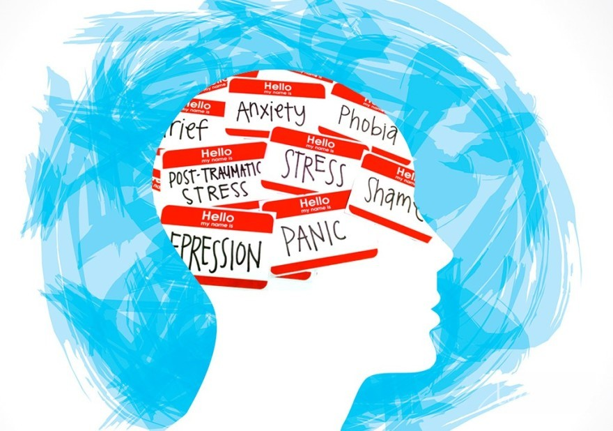

Понятие психического здоровья
Психическое здоровье – это состояние психического благополучия, которое позволяет людям справляться со стрессовыми ситуациями в жизни, реализовывать свой потенциал, успешно учиться и работать, а также вносить вклад в жизнь общества. Это неотъемлемый компонент здоровья и благополучия, который лежит в основе наших индивидуальных и коллективных способностей принимать решения, строить отношения и формировать мир, в котором мы живем. Психическое здоровье – это одно из основных прав человека. Кроме того, оно имеет решающее значение для личного, общественного и социально-экономического развития.
Психическое здоровье не сводится к о"тсутствию психических расстройств. Оно представляет собой индивидуальный для каждого человека непрерывный континуум, в рамках которого человек сталкивается с комплексом факторов разной степени сложности и испытывает разный уровень стресса, что приводит к очень разным для каждого индивида потенциальным социальным и клиническим последствиям.
Нарушения психического здоровья – это собирательное понятие, охватывающее психические расстройства, различные виды психосоциальной инвалидности, а также прочие психические патологические состояния, сопряженные со значительным дистрессом, функциональными нарушениями или риском самоповреждения. Как правило, лица с нарушениями психического здоровья чаще испытывают более низкий уровень психического благополучия, хотя возможны и исключения.
Детерминанты психического здоровья
На протяжении всей нашей жизни многочисленные индивидуальные, социальные и структурные детерминанты могут в совокупности защищать или, напротив, подрывать наше психическое здоровье и менять наше положение в континууме психического здоровья.
Различные индивидуальные психологические и биологические факторы, такие как эмоциональные навыки, употребление психоактивных веществ и генетические особенности, могут делать человека более подверженным нарушениям психического здоровья.
Воздействие неблагоприятных социальных, экономических, геополитических и экологических обстоятельств, включая бедность, насилие, неравенство и неблагоприятные социальные условия, также повышает риск возникновения психических расстройств.
Факторы риска могут проявляться на всех этапах жизни, но особенно сильное негативное влияние оказывают те из них, которые возникают в важнейшие для развития человека периоды, особенно в раннем детстве. Например, известно, что суровое родительское воспитание и физические наказания подрывают психическое здоровье детей, а издевательства в школе являются одним из основных факторов риска развития нарушений психического здоровья.

Аналогичным образом, защитные факторы также возникают на протяжении всей жизни человека и способствуют укреплению психической устойчивости. К таким факторам относятся наши индивидуальные социальные и эмоциональные навыки и качества, а также опыт позитивного социального взаимодействия, качественное образование, достойная работа, проживание в безопасном районе, сплоченность местной общины и многое другое.
Влияние факторов риска и защитных факторов может иметь разный масштаб. Так, угрозы местного уровня повышают риск для отдельных людей, семей и местных сообществ. Глобальные угрозы, такие как экономический спад, вспышки заболеваний, гуманитарные чрезвычайные ситуации, вынужденные перемещения населения, а также усугубляющийся климатический кризис, повышают уровень риска для целых групп населения.
Влияние каждого отдельного фактора риска или защитного фактора с трудом поддается прогнозированию. У большинства людей воздействие какого-либо фактора риска не приводит к развитию психического расстройства, тогда как у многих людей психические расстройства могут развиваться даже при отсутствии известных факторов риска. Тем не менее, комплекс различных взаимодействующих детерминантов психического здоровья может как укреплять, так и подрывать психическое здоровье.